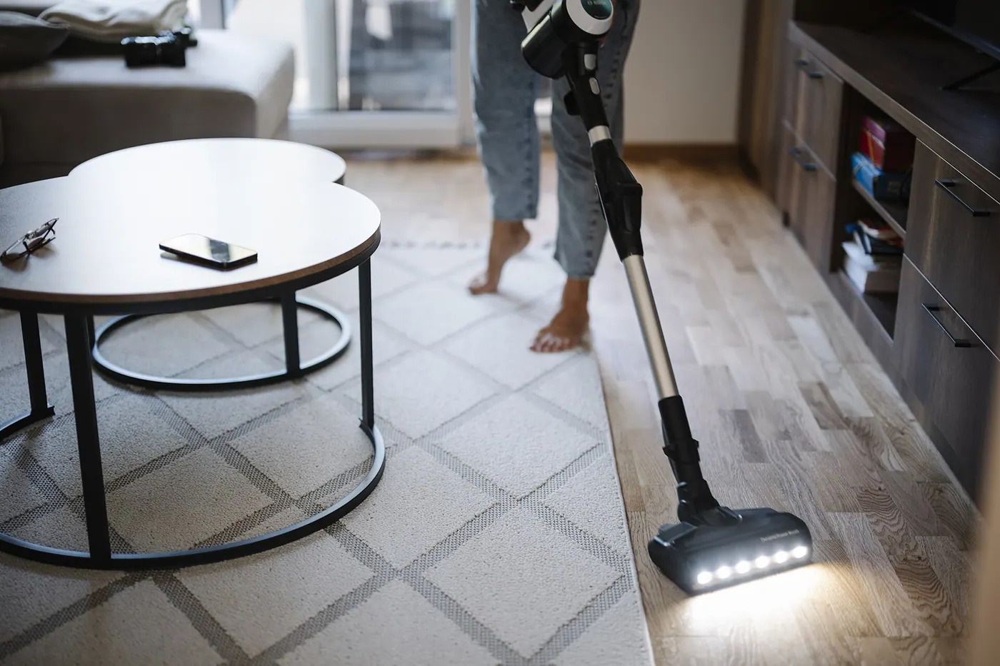
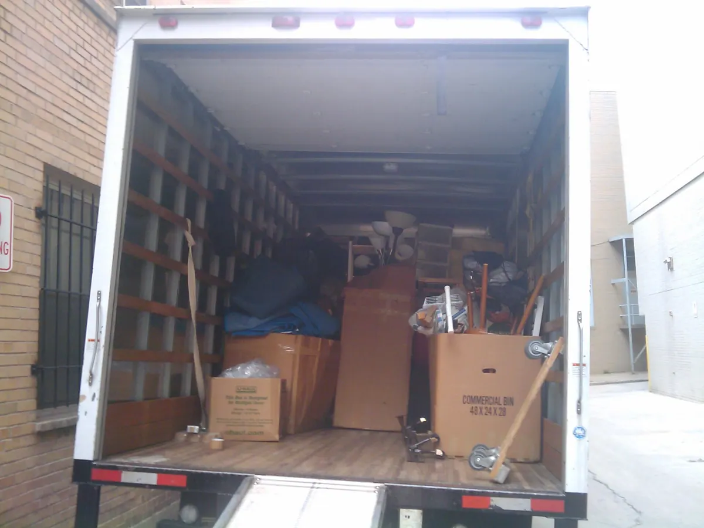

Tjänst · Flyttstäd
Flyttstäd i Stockholm — 8 minuter per kvadratmeter
En flyttstäd av 55 m² tar 7,5 timmar och kostar 4 867,50 kr före RUT. Efter avdraget betalar du 2 433,75 kr. Arbetet följer samma checklista som besiktningsmannen använder, och du får ett signerat protokoll med tidsstämplar och foton innan vi lämnar bostaden.

Innehåll
Det här ingår i en flyttstäd
Checklistan nedan är den vi arbetar efter varje gång, oavsett bostadens skick. Alla punkter ska vara avbockade och fotograferade innan jobbet är klart.
Golv, ytor och lister
- Hela golvytan dammsugs och moppas, inklusive under radiatorerna
- Lister, dörrkarmar, dörrblad och fönsterbrädor torkas av
- Garderober och skåp invändigt, även hyllplan och luckornas insidor
- Väggar torkas av på höjd med handen där märken finns
- Eluttag, strömbrytare och handtag desinficeras
- Fönster invändigt, glas, karm och båge
- Balkong sopas och torkas av, räcke och golvbrunn ingår
- Sopor och återvinning bärs ut till fastighetens kärl
Kök och vitvaror
- Köket utvändigt: skåp, lådor, luckor, bänkskiva och kakel
- Köket invändigt i skåp och lådor, inklusive kryddhylla och bestickslådor
- Kyl och frys urtagna, avfrostade och rengjorda, med tätningslister
- Spis, plåt och kokvrå rengörs; inbränd ugn körs som tillval 350 kr
- Köksfläkt och filter, fläkthusets utsida och knoppar
- Diskbänk, sil och vattenlås rensas
Badrum och hall
- Kakel och klinker, inklusive fogar mellan plattorna
- Kalkborttagning på duschväggar, kranar, armatur och duschmunstycke
- WC invändigt och utvändigt, sits, spolknapp och sockel
- Tvättställ, spegel, blandare och badrumsskåp invändigt
- Golvbrunn, duschslang och tvättmaskinens utsida
- Hallen: garderober, hatthylla, skoställ och socklar
- Kontroll mot checklistan och signerat protokoll med foton
Prislista
Fast pris per storlek
Arbetstiden räknas med 8 minuter per kvadratmeter och timpriset 649 kr. RUT-avdraget tar halva arbetskostnaden, och vi drar av det hos Skatteverket åt dig. Priset du ser i sista kolumnen är det du betalar.
| Storlek | Yta | Arbetstid | Pris före RUT | Efter RUT |
|---|---|---|---|---|
| 1 rum + kokvrå | 35 m² | 4,5 h | 2 920,50 kr | 1 460,25 kr |
| 2 rum + kök | 55 m² | 7,5 h | 4 867,50 kr | 2 433,75 kr |
| 3 rum + kök | 72 m² | 9,5 h | 6 165,50 kr | 3 082,75 kr |
| 4 rum + kök | 95 m² | 12,5 h | 8 112,50 kr | 4 056,25 kr |
| Radhus | 140 m² | 18,5 h | 12 006,50 kr | 6 003,25 kr |
Dra i tabellen i sidled för att se alla kolumner. På telefon visas varje rad som ett kort med etikett.
Så räknar vi fram priset
Ytan styr tiden. En bostad på 55 m² ger 7,5 timmar i planeringen, en på 95 m² ger 12,5 timmar. Timpriset för flyttstäd är 649 kr för privatkund. Halva arbetskostnaden dras av via RUT, vilket ger 2 433,75 kr för 55 m² och 4 056,25 kr för 95 m². RUT gäller privatpersoner, inte företag. Kontorsstäd faktureras 449 kr/timme exkl. moms utan avdrag.
Priset förutsätter att bostaden är tom på möbler och att städning sker före besiktning. Står bostaden tom utan el eller vatten tillkommer 2 timmar i planeringen.
Uppdragsprotokoll — flyttstäd 55 m²
Besiktning godkändBesiktning
Vad en besiktningsman tittar på
Besiktningsmannen arbetar uppifrån och ner och lägger mest tid på kök och badrum. Sex punkter avgör oftast om anmärkningen kommer.
- Hörn, socklar och golvkanter där damm samlas
- Kakel och fogar i badrummet
- Kalk på duschväggar, kranar och armatur
- Kökets skåp invändigt och fläktens filter
- WC invändigt, under kanten och bakom sitsen
- Fönsterglas, karm och båge invändigt
Innan vi lämnar bostaden går vi igenom listan med dig, punkt för punkt. Du behöver inte vara på plats, protokollet med foton fungerar som underlag om något skulle ifrågasättas senare.

Planering
Tid vi behöver
Vi bokar en tidslucka som håller hela vägen, utan att stressa igenom badrummet för att hinna till nästa objekt.
Tre tider att hålla koll på
Minst 4 timmar gäller även för små objekt, till exempel en etta på 35 m² med kokvrå. Från 35 m² och uppåt räknar vi 8 minuter per kvadratmeter, vilket ger 7,5 timmar för 55 m² och 18,5 timmar för ett radhus på 140 m². Har bostaden stått tom en längre tid lägger vi till 2 timmar, eftersom stillastående damm behöver ligga och lösas upp innan det går att torka bort.
Vill du ha flera städer i samma besök, till exempel flyttstäd och fönsterputs, lägger vi ihop tiderna i en offert och du får ett datum. Offert skickas inom 2 timmar vardagar 07–18.
Tillval
Tillval med fast pris
Tillvalen bokas samtidigt som flyttstäden och faktureras med samma RUT-avdrag på arbetskostnaden.
Priser per tillval
- Ugn invändigt350 kr
- Kylskåp invändigt, om du inte hunnit tömma det250 kr
- Balkong utöver sopning200 kr
- Förråd eller källarfack150 kr
- Fönsterputs utöver det som ingår, per båge79 kr
Tillvalen anges före RUT. Fönsterputs har minsta debitering 1 200 kr. Ange tillvalen när du bokar, då hinner vi lägga in tiden i samma besök.
Frågor och svar
Frågor vi får varje vecka
Vanligaste frågorna om flyttstäd
Gäller RUT-avdraget för flyttstäd?
Måste bostaden vara tom?
Vad gör vi om besiktningen får anmärkning?
Skicka adress, yta och önskat datum. Offerten ligger i din inkorg inom 2 timmar på vardagar, med fast pris och RUT-avdraget redan avräknat.
Begär offert på flyttstäd